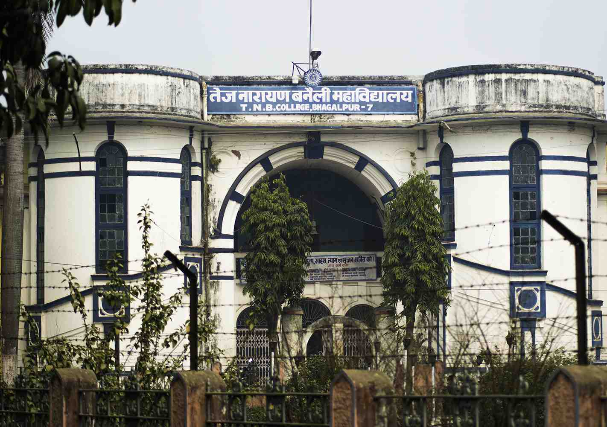

T.N.B. College, founded in 1883, is a constituent unit of T.M. Bhagalpur University. It occupies the foremost position among the peer colleges of the university and is acclaimed as an institution for imparting quality education in the faculties of Science, Arts and Vocational courses. The college is the parent institution of all the P.G. Departments and most of the Research Centres of the university. The college is situated in the city of Bhagalpur and its location is between two very important cities- Patna and Kolkata. At present, the college runs undergraduate courses in almost all the popular disciplines of Science and Arts. Additionally, Postgraduate teaching is also imparted in subjects like English, Mathematics, Physics and Chemistry. Vocational and Self-financing courses like B.C.A. and Biotechnology are also running. The courses of studies are in conformity with national standard based on UGC model curriculum. Seminars, Symposium, Conference, interaction, Project-work are common features of the institution. It is reputed for quality teaching and fair examination.
The college is research oriented. Emphasis is laid on laboratory work, field trip and excursion. Recently, Plant Tissue Culture Lab has also become operational. Extra-curricular activities like elocution, debates, games, sports, fine arts, music, and drama are regularly promoted and are student participation is commendable. NCC, NSS and extension Services are an integral part of college-life. The college takes part in social service through various activities and programmes like Literacy Campaign, Blood Donation, Child Immunization Programme, AIDS awareness, Eye Camp etc. The college is endowed with a lush green campus spread across ______ acres. The college has spacious classrooms, labs, library, hall, gymnasium, sports stadium etc. Previously, the college was a residential one. But with the increase in the number of students, it is able to serve about 10% of the students with accommodation facility. The hostels of the College are located in the campus. The College aims to inculcate among the students the fine human values for enlightenment of their personalities so that they become agents of positive change in the contemporary times and make contribute meaningfully to the society and the nation at large. Quote
T.N.B. College is the second oldest institution of higher learning in Bihar, second to Patna College of Patna only. This College is now 129(one hundred and twenty nine) years old having already celebrated its centenary in which the chief guest was the then Chief Minister of Bihar, Hon’ble Shri Bhagwat Jha ‘Azad? It was established on 12 Feb. 1883 with Intermediate level classes then called as F. A. under Calcutta University, as there was no university in Bihar. Rai Bahadur Tej Narayan Singh contributed a good deal of his mind, labour, money and land also for its building and the college was named as Tej Narayan Jubilee College (TNJ). Just after 2 years in 1885, degree and Post-graduate classes in some of the subject of Arts and degree class in Law were started in this college. Again the successors of Banaili families came to its help and contributed 60 acres of land and 6 lakhs of rupees in Cash for the construction of building and other developmental work. The Govt. of Bihar also gave some grant for the building and as a consequence the magnificent building of the college came up in 1922. The college was renamed on the 23rd June 1959 as Tej Narayan Banaili College considering the great contribution made by the Banaili estate towards its rise and glorious achievements. In the year 1959 it was made a constituent unit of Bihar University and 12th July?960, Bhagalpur University was established after bifurcation from the Bihar University and TNB College became the first premier constituent College of the University. In fact most of the present P. G. departments of Bhagalpur University, originated first in the T.N.B.College and then after a few years, got transferred to their present buildings. In Feb.?004, the college was accredited by NAAC and awarded B+ grade. A big library building, Physics department block, students' common Room, a big stadium for games & sports were constructed from the UGC fund and state Govt. funds. The library of the college has more than 86,000(Eighty Six thousand) books and journals. There are many societies and academic associations functioning, almost in all the department. T.N.B. College has had a glorious past 129 (One hundred & twenty nine) years and a very high academic culture. Persons of great eminence have been students and teachers of this college. Some names may be proudly mentioned. The immortal novelist Sri Sarat Chandra Chattopadhyaya, National Professor of Physics, Sri S.K. Mitra, Messrs. K.P. Basu (great Algebra-man), L.K. Jha, Dr. S.C. Jha (Member, Economic Advisory Council to the Prime-Minister, Govt. of India), Sri A. K. Choudhary (I.A.S., Presently Chief Secretary, Govt. of Bihar) and many others whose names could not possible to be mentioned here are all glorified personalities connected with this institution. Main Building T.N.B. College is the second oldest institution of higher learning in Bihar, second to Patna College of Patna only. The College aims to inculcate among the students the fine human values for enlightenment of their personalities so that they become agents of positive change in the contemporary times and make contribute meaningfully to the society and the nation at large.
